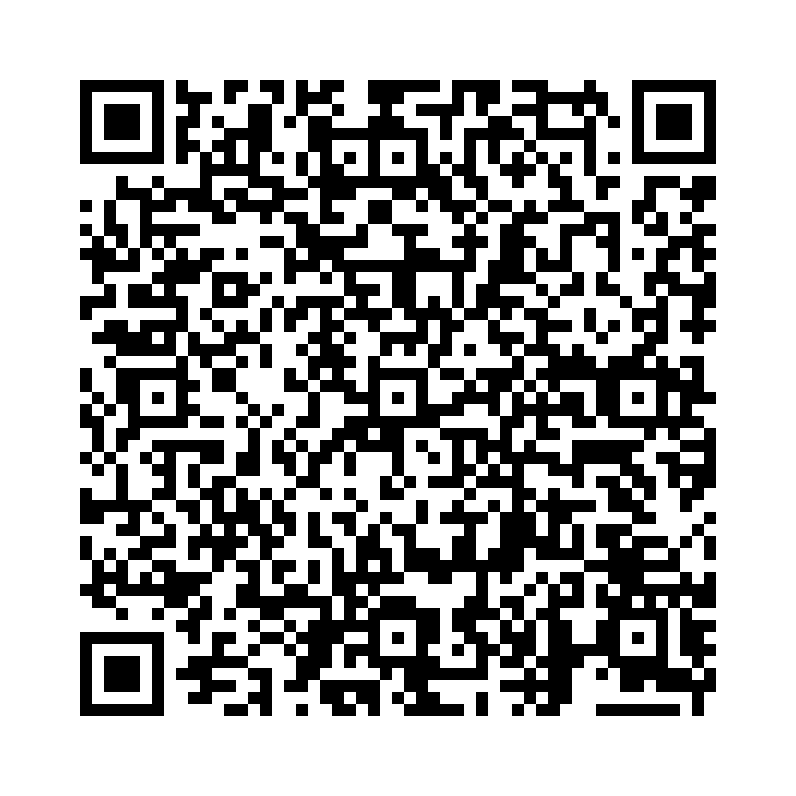

「do」は「する・行う」という意味の一般動詞です。助動詞としても使われ、疑問文や否定文の作成に用いられます。
以下の単語を正しい語順に並べ替えて、正しい英文を作りましょう。

問題 1: (my / I / do / homework / every / day) - 私は毎日宿題をします。
解答: I do my homework every day.
解説: 「I do my homework every day.」は「私は毎日宿題をします。」という意味です。
問題 2: (do / you / ice / cream / like / ?) - あなたはアイスクリームが好きですか？
解答: Do you like ice cream?
解説: 「Do you like ice cream?」は「あなたはアイスクリームが好きですか？」という意味です。
問題 3: (best / in / she / does / her / school) - 彼女は学校で最善を尽くします。
解答: She does her best in school.
解説: 「She does her best in school.」は「彼女は学校で最善を尽くします。」という意味です。
問題 4: (can / do / he / magic / tricks) - 彼は手品ができます。
解答: He can do magic tricks.
解説: 「He can do magic tricks.」は「彼は手品ができます。」という意味です。
問題 5: (you / want / what / do / to / do / today / ?) - 今日は何をしたいですか？
解答: What do you want to do today?
解説: 「What do you want to do today?」は「今日は何をしたいですか？」という意味です。
問題 6: (the / dishes / we / do / after / dinner) - 私たちは夕食の後で皿洗いをします。
解答: We do the dishes after dinner.
解説: 「We do the dishes after dinner.」は「私たちは夕食の後で皿洗いをします。」という意味です。
問題 7: (do / your / work / at / parents / home / ?) - あなたの両親は家で働いていますか？
解答: Do your parents work at home?
解説: 「Do your parents work at home?」は「あなたの両親は家で働いていますか？」という意味です。
問題 8: (robot / does / the / many / tasks) - そのロボットはたくさんの作業をします。
解答: The robot does many tasks.
解説: 「The robot does many tasks.」は「そのロボットはたくさんの作業をします。」という意味です。
問題 9: (forget / to / Don't / do / your / chores) - 家の手伝いをするのを忘れないでください。
解答: Don't forget to do your chores.
解説: 「Don't forget to do your chores.」は「家の手伝いをするのを忘れないでください。」という意味です。
問題 10: (he / his / best / always / does / in / sports) - 彼はいつもスポーツで全力を尽くします。
解答: He always does his best in sports.
解説: 「He always does his best in sports.」は「彼はいつもスポーツで全力を尽くします。」という意味です。